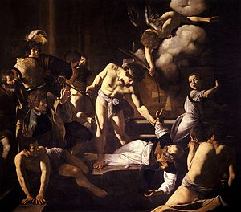

- Overview
-
Michelangelo was an Italian sculptor, painter, architect and poet of the High Renaissance born in the Republic of Florence, who exerted an unparalleled influence on the development of Western art. Considered by some the greatest living artist during his lifetime, he has since been described as one of the greatest artists of all time. Despite making few forays beyond the arts, his artistic versatility was of such a high order that he is often considered a contender for the title of the archetypal Renaissance man, along with his rival, the fellow Florentine and client of the Medici, Leonardo da Vinci.
- Career
-
- Impressed by the quality of his design, Cardinal Raffaele Riario invited him to Rome and commissioned him to work on a statue of the Roman wine god Bacchus.
- In 1499, he returned to Florence again but this time as an art star. He was recognized as the most talented sculptor of Italy and was commissioned to carve a statue of ‘David’. He turned a huge piece of marble into a dominating figure which was placed on the gable of Florence Cathedral.
- In 1508, Julius commissioned him to decorate the ceiling of Sistine Chapel, a project which took about four years to complete. After the ceiling was completed in 1512, Michelangelo continued to work on the tomb of Julius II for the next several decades.
- During this time, he also designed the Medici Chapel in Florence and the historical Laurentian Library at San Lorenzo's Church, Florence. In 1534 he finally settled in Rome and later on met Vittoria Colonna who became the subject and recipient of many of his more than 300 poems and sonnets.
- In 1546, he was appointed the chief architect of St. Peter’s Basilica, Rome, and devoted himself entirely to architecture and poetry during his later years.
- Impressed by the quality of his design, Cardinal Raffaele Riario invited him to Rome and commissioned him to work on a statue of the Roman wine god Bacchus.
- On View
-
- The Louvre, Paris
- Rijksmuseum, Amsterdam
- National Gallery, London
- British Museum, London
- Isabella Stewart Gardener Museum, Boston
- Kimbell Art Museum, Fort Worth
- Palazzo Vecchio, Florence
- Royal Collection Trust
- Uffizi Gallery, Florence
ArtWorks
Battle of Cascina
Michelangelo never completed the painting, but did produce a complete cartoon of the composition. The cartoon was copied by several artists, the most notable extant copy being by Michelangelo's pupil Sangallo. Some of Michelangelo's preparatory drawings also survive, along with prints of part of the scene by Marcantonio Raimondi.
Crucifixion of Saint Peter
The Crucifixion of Saint Peter (Italian: Crocifissione di san Pietro; 1601) is a work by Michelangelo Merisi da Caravaggio, painted for the Cerasi Chapel of Santa Maria del Popolo in Rome. Across the chapel is a second Caravaggio work depicting the Conversion of Saint Paul on the Road to Damascus (1601). On the altar between the two is an Assumption of the Virgin Mary by Annibale Carracci.
Doni Tondo
During the early 1500s, Michelangelo was commissioned by Angelo Doni to paint a “Holy Family” as a present for his wife, Maddalena Strozzi. Michelangelo used the form of a tondo, or round frame, for the painting. Doni Tondo features the Christian Holy family (the child Jesus, Mary, and Saint Joseph) along with John the Baptist in the foreground and contains five ambiguous nude male figures in the background.

Manchester Madonna
he Madonna and Child with St John and Angels (c. 1497), also known as The Manchester Madonna, is an unfinished painting attributed to Michelangelo in the National Gallery, London. It is one of three surviving panel paintings attributed to the artist and is dated to his first period in Rome. The painting's attribution to Michelangelo was in doubt for much of the 19th and 20th centuries, but now most scholars are in agreement.
Staircase of the Laurentian Library">
In 1524, Michelangelo was commissioned by the Medici pope to design the library for the San Lorenzo’s Church in Florence, Italy. Michelangelo designed both the interior of the library itself and its vestibule. He pioneered the Mannerist style in his design of the library which became renowned for its architecture. The Laurentian Library is one of Michelangelo’s most important architectural achievements and his innovations and use of space in the library were revolutionary..
Staircase of the Laurentian Library
In 1524, Michelangelo was commissioned by the Medici pope to design the library for the San Lorenzo’s Church in Florence, Italy. Michelangelo designed both the interior of the library itself and its vestibule. He pioneered the Mannerist style in his design of the library which became renowned for its architecture. The Laurentian Library is one of Michelangelo’s most important architectural achievements and his innovations and use of space in the library were revolutionary..

The Calling of Saint Matthew
The painting depicts the story from the Gospel of Matthew (Matthew 9:9): "Jesus saw a man named Matthew at his seat in the custom house, and said to him, "Follow me", and Matthew rose and followed Him." Caravaggio depicts Matthew the tax collector sitting at a table with four other men. Jesus Christ and Saint Peter have entered the room, and Jesus is pointing at Matthew.

The Martyrdom of Saint Matthew (Italian: Martirio di San Matteo; 1599–1600) is a painting by the Italian master Michelangelo Merisi da Caravaggio. It is located in the Contarelli Chapel of the church of the French congregation San Luigi dei Francesi in Rome, where it hangs opposite The Calling of Saint Matthew and beside the altarpiece The Inspiration of Saint Matthew, both by Caravaggio.
The Martyrdom of Saint Matthew
The Martyrdom of Saint Matthew (Italian: Martirio di San Matteo; 1599–1600) is a painting by the Italian master Michelangelo Merisi da Caravaggio. It is located in the Contarelli Chapel of the church of the French congregation San Luigi dei Francesi in Rome, where it hangs opposite The Calling of Saint Matthew and beside the altarpiece The Inspiration of Saint Matthew, both by Caravaggio.
The Conversion of Saul
The Conversion of Saul is a fresco painted by the Italian Renaissance master Michelangelo Buonarroti (c. 1542–1545). It is housed in the Cappella Paolina, Vatican Palace, in the Vatican City. The style is more mannerist than his earlier Sistine Chapel frescoes, and was not as well received by contemporaries. The next fresco he completed was The Crucifixion of St. Peter.
The Creation of Adam
The work done by Michelangelo on the Sistine Chapel ceiling is a cornerstone of Renaissance art and The Creation of Adam is the most famous fresco panel of the masterpiece. The popularity of the painting is second only to Mona Lisa; and along with The Last Supper of Da Vinci, it is the most replicated religious painting of all time. The image of the near-touching hands of God and Adam has become iconic of humanity and has been imitated and parodied innumerable times.
The Last Judgement
The Last Judgement is one of the most influential works in fresco in the history of Western art. Painted on the altar wall of the Sistine Chapel in Vatican City, it depicts the Second Coming of Christ (a future return of Jesus to earth) and the final and eternal judgment by God of all humanity. Jesus is shown in the center of the painting and is surrounded by prominent saints; while the Resurrection of the Dead and the Descent of the Damned into Hell is shown in the zone below.
×


{kind=link}
{kind=link}
{kind=link}
{kind=link}